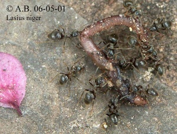

Ernährung (natürlich)
| Dieser Artikel wurde zur Überarbeitung vorgeschlagen. Hilf mit, ihn zu verbessern!
Begründung: Stil --DmdM (Diskussion) 17:46, 2. Feb. 2014 (CET) |

Adulte Tiere benötigen hauptsächlich Kohlenhydrate (Zucker), die heranwachsenden Larven hauptsächlich Proteine (Eiweiß).
Kohlenhydrate
Die Kohlenhydrate stammen von Pflanzensäften, die meist indirekt über Pflanzensaftsauger (wie den Pflanzenläusen) aber auch direkt von der Pflanze gewonnen werden. Bei der indirekten Aufnahme der Pflanzensäfte sammeln die Arbeiterinnen den Kot der Pflanzensauger (den sogenannten Honigtau). Hierzu werden die Pflanzensauger von den Ameisen "gemolken", was bedeutet, dass die Ameisen ihre "Kühe" durch streicheln mit den Fühlern (dem sogenannten "betrillern") dazu anregen, einen Tropfen der begehrten Nahrung aus ihren Hinterleibern abzugeben.
Ernteameisen
Ernteameisen (z.B. Messor, Pogonomyrmex) tragen in großem Maßstab Körner ein und speichern diese in Kornkammern. In Kaugemeinschaften werden die Körner geknackt, eingespeichelt und zu Ameisenbrot verarbeitet.
Proteine

Die Proteine werden zu einem großen Teil aus Arthropoden aller Art gewonnen, die teils frisch gejagt werden, teils bereits tot sind. Viele Arten sind hervorragende Jäger, die auch mit Tieren fertig werden, die um ein vielfaches größer sind als die Ameisen selbst. Diese Tatsache ist ein Grund dafür, dass Ameisen (bis auf einige Ausnahmen) keine "Schädlinge" sind, wie allgemein angenommen: Eine Kolonie der "Hügelbauenden Waldameisen" (Formica s. str.) zum Beispiel kann an einem Tag mehrere Millionen Insekten erbeuten, darunter auch viele Schadinsekten, und trägt so zur Gesundheit des Waldes bei.
Die sogenannten Treiberameisen (Südamerika, Afrika), werden von einheimischen Bewohnern sehr geschätzt, da nach einem Raubzug dieser Arten kaum noch unliebsame Tiere wie Spinnen, Skorpione und kleine Schlangen in der Umgebung zu finden sind. Nebenbei bescheren sie den Bauern in diesen Ländern eine reiche Ernte, da auch Massen an schädlichen Insekten erbeutet werden. Aber auch die anderen Ameisenarten tragen auf diese Weise zur "Naturhygiene" bei.
Nahrungsbeschaffung und Verteilung
Die Nahrung wird meist in der Umgebung gesammelt und sehr schnell verteilt. Wenn eine Ameise an den Fühlern berührt wird, würgt sie aus ihrem Kropf (auch sozialer Magen genannt) vorhandene Nahrung hervor, die die berührende Ameise frisst. Auf diese Art kann eine Nahrungsquelle in weniger als einer halben Stunde auf alle Individuen eines Stammes verteilt werden. Durch die gute Verteilung der Nahrungsmittel kann die Futter suchende Ameise darauf vertrauen, dass die anderen den gleichen Nährstoffbedarf wie sie selbst haben und gezielt danach suchen.
Eine Ameise, die Futter findet, bewegt sich nach der Nahrungsaufnahme so schnell wie möglich in den Bau zurück. Alle Ameisen, die sie auf dem Weg dorthin trifft werden wie oben beschrieben versorgt und folgen der Duftspur zum Futter. Dieses Verhalten ist allerdings nicht bei allen Arten anzutreffen.
Aas

Viele Ameisen fressen "Aas", aber nicht, wenn es bereits stinkt. Die verhalten sich ganz wie wir: Was wir beim Metzger holen, ist Aas. Frisch, oder auch z. B. luftgetrocknet, mögen wir es. Ist es angegammelt, verschmähen wir es. Aasfressende Ameisen verwerten frischtote Insekten oder gehen an einen frischen Kadaver etwa von einem Kleinsäuger oder Vogel. In trockenen Gebieten werden auch schon länger tote Insekten verwertet, z. B. von Cataglyphis, die in der Hitze der Halbwüste vertrocknete Insekten eintragen.
In meinen über 40 Jahren Erfahrung mit Ameisenhaltung habe ich grundsätzlich darauf geachtet, dass die Reste von Mehlkäferpuppen oder Schabenstückchen, die wir verfüttern, IMMER nach spätestens 3 Tagen abgeräumt wurden (Futterwechsel mussten meine Kandidaten und TAs montags, mittwochs, freitags vornehmen). Je nach Feuchtigkeitsbedarf der Ameisenarten war eben auch die Futterarena mal mehr, mal weniger feucht. Ausgetrocknetes Futter wird nicht von allen Arten angenommen. Feuchtes Fleischfutter fängt nach 2 Tagen an zu stinken, manchmal wächst dann schon Schimmel drauf. Und es stinkt auch für uns erbärmlich. Man kann zusehen, wie Ameisen da hingehen und "angewidert" abdrehen! Wichtig ist auch, dass man nie zu viel Fleischfutter anbietet, sondern möglichst nur so viel, wie in den nächsten 48 Stunden voraussichtlich verbraucht wird. Dann wird die Oberfläche, auf der das Bakterienwachstum beginnt, gleichmäßig abgefressen, so dass das Futter tatsächlich länger hält.
Verdorbenes Futter verschmähen sie (sie sind "vernünftiger" als man denkt: Sie fressen das Zeug nicht, und verderben sich somit auch nicht den Magen!). Im Zweifelsfall hungern sie eben, oder, weil sie auch den Larven kein verdorbenes Futter geben, es verhungern Larven. Die werden dann nicht selten kurz vor ihrem Tod an ihre Geschwisterlarven verfüttert.
{kind=link}

Regenwürmer sind bei Ameisen weniger beliebt, weil sie oft schleimig sind. Das rechts dargestellte Foto zeigt jedoch Lasius niger bei der Verarbeitung eines (halb-)toten Regenwurmes im Freiland (Terrasse). 1. Mai, 15 Grad kühl, noch kaum Blattläuse und andere Insekten. Der kleine Wurm (vielleicht von einem Vogel aus dem Boden gezogen) ist von Schmutz bedeckt, der den Schleim neutralisiert, und er wirkt leicht angetrocknet. So kann auch ein Regenwurm als Beute dienen.
Symbiosen


Einige Arten entwickelten besondere symbiontische Beziehungen zu ihren Nahrungsquellen, wie sie sonst nicht in der Natur anzutreffen sind:
Lauszucht
Mehrere Arten halten Pflanzenläuse ähnlich wie Vieh. Sie beschützen die Blattläuse, tragen sie zu passenden Futterpflanzen und manche Arten bringen Muttertiere und Eier zu Beginn der Winterruhe in ihr Nest. Von den Pflanzenläusen erhalten die Ameisen Honigtau, in einigen Fällen dienen die Läuse auch als Proteinquelle.
Ein Beispiel für die Haltung von Wurzelläusen im Nest, an Pflanzenwurzeln, bietet die Gattung Tetramorium. Hier finden sich häufig auffallende Pflanzenläuse direkt im Nest. Das folgende Bild zeigt Tetramorium-Arbeiterinnen, wahrscheinlich mit der Art Paracletus cimiciformis:
Pilzzucht
Zwei Ameisengattungen (Atta und Acromyrmex) haben eine besonders bemerkenswerte Art der Nahrungsbeschaffung entwickelt. Diese gehören zum Tribus der "Attini" (Blattschneider). Sie kommen ausschließlich in den tropischen Regionen Süd- und Mittelamerikas vor. Diese Ameisen schneiden grünes Blattwerk von den Bäumen und tragen diese Blattstückchen in ihr Nest.
Jedoch fressen sie die eingetragenen Blätter nicht, sondern züchten mit ihnen einen Pilz von dem sie sich ernähren. Die adulten Ameisen beziehen allerdings einen großen Teil ihrer (Kohlenhydrat-)Nahrung aus dem beim Schneiden und Kleinkauen austretenden Pflanzensaft, der ja zuckerhaltig ist. Diese Symbiose ist soweit fortgeschritten, dass derBlattschneider-Pilz ohne seine Ameisen nicht existieren könnte und umgekehrt.
Andere Gattungen der Attini züchten ebenfalls Pilze, verwenden aber nicht frisches Pflanzenmaterial als Substrat, sondern z. B. Raupenkot (= mehr oder weniger vorverdautes, bereits zerkleinertes Pflanzenmaterial).
extraflorale Nektarien
Viele Pflanzen, auch in der mitteleuropäischen Flora, sondern auch außerhalb der Blütezeit Nektar in extrafloralen Nektarien ab. Das sind Drüsen, die außerhalb der Blüten ("extrafloral") an verschiedenen Pflanzenteilen angelegt sind. Die süßen Sekrete werden von Ameisen aufgesucht. Während sie die Pflanze belaufen, stoßen sie auch auf Fressfeinde der Pflanze, oder z. B. deren Eier, und befreien die Pflanze von ihren Schädlingen.
{kind=link}
Blatt einer unbenannten Pflanze mit unbestimmten Ameisen, die sich an den Blattader-Verzweigungen ansammeln, wo die extrafloralen Nektarien sitzen. Malaysia, nahe Kuala Lumpur. Das Blatt samt Ameisen wurde abgetrennt und für das Foto auf den Boden gelegt. Nach oben, gegen das Licht, war ein Foto leider nicht möglich. Einige Ameisen waren beim Abnehmen geflüchtet, es hielten sich also noch mehr davon an den Nektarien auf.
Ungewöhnliche Arten von Nahrungserwerb
Nach einer Veröffentlichung von 2008 beuten nomadische Ameisen frei wachsende Pilzkörper aus, siehe Aktuelle Ereignisse - Nomadische Ameisen ernten Pilze im Regenwald von Malaysia (9. August 2008).